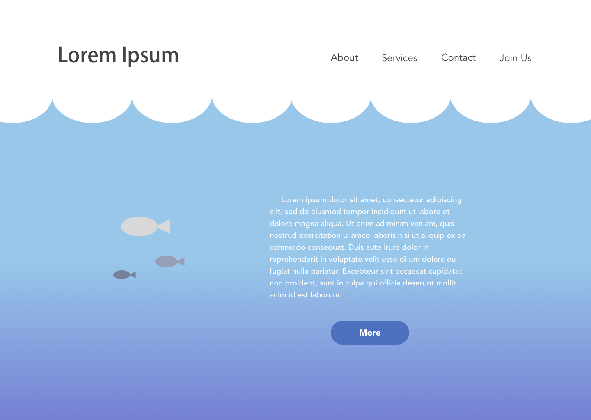
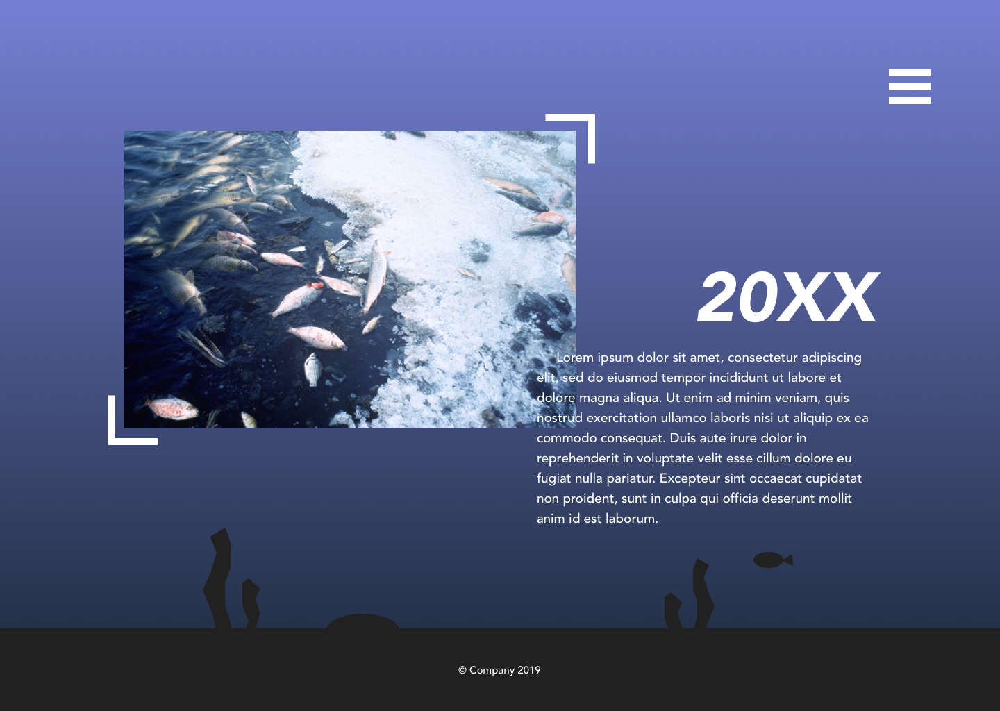

A design for a website that promotes saving and protecting the ocean. The goal of the site is to provide information about the current situation of the ocean such as the plastic waste being discarded causing sea animals to suffer and ways that we can help. The website is like a sea. As the user keeps scrolling, the colors will get darker as if they're going deeper into the water. The menu nav will turn into an icon on the top right so it will be easy to access and won't block the content.
 